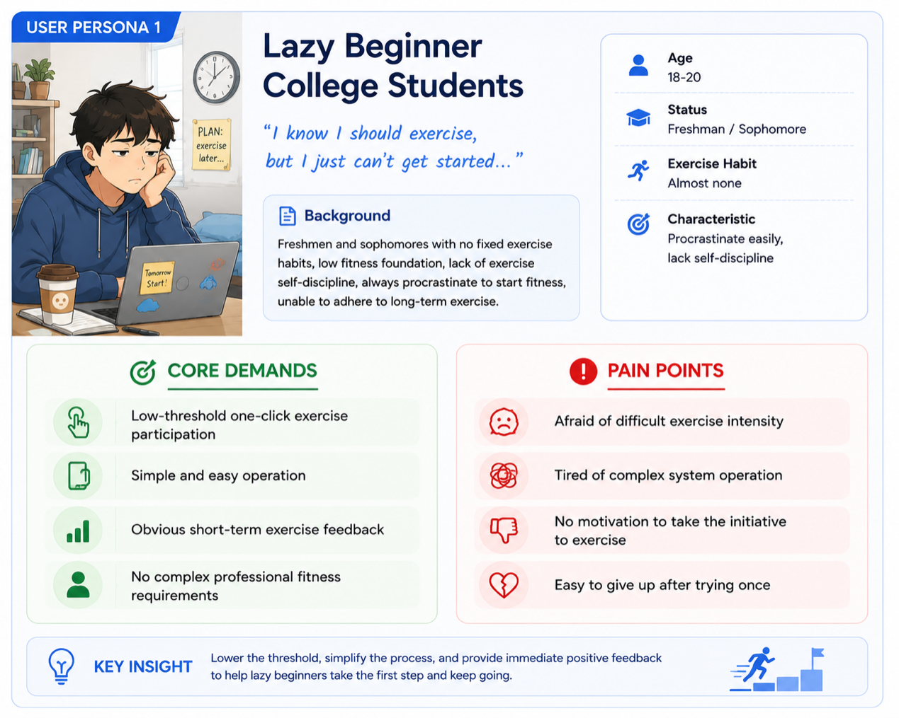
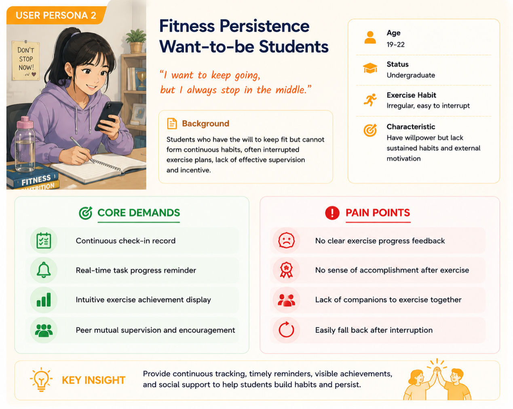
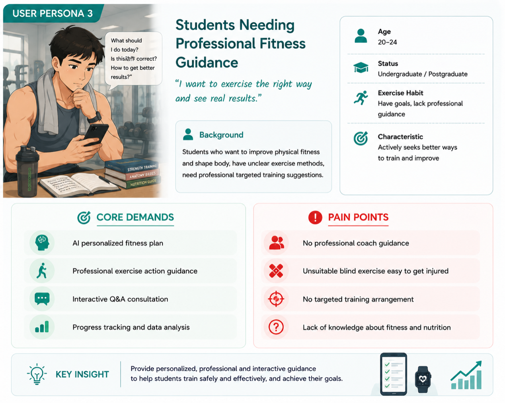

1.1 Track Selection Reason
Our group strictly chose the Active Campus Health Promotion Track as the core project direction, focusing on solving the prevalent fitness dilemma among contemporary college students. Under the background of the national Healthy China strategy and college physical education basic work requirements, most college students lack spontaneous exercise awareness, cannot adhere to long-term fitness plans, and have no professional exercise guidance and continuous exercise motivation.
Unlike heritage and social public welfare tracks, the active fitness track is closely integrated with students’ daily campus life, with clear user groups, obvious pain points and strong practical landing value.
We adopt gamification as the core design logic, lowering the exercise participation threshold through check-in mechanisms, ranking incentives and social interaction modules, effectively solving the problems of difficult exercise initiation, low long-term persistence and lack of professional guidance for students. This track fits our system design positioning perfectly, can quickly verify design effects through real campus user tests, and achieves the dual goals of improving students’ physical activity level and forming long-term healthy fitness habits.
1.2 Research Gap Analysis


1.3 Stakeholder User Persona Definition
1.3.1 Primary Users


1.3.2 Secondary Users


NOTE: All four interviewees are actual students. However, due to the requests of the interviewees and concerns for privacy, we are unable to include their real photos here.
1.3.3 User Insight Summary
Based on the user research and persona analysis, several key insights were identified:
-
01
Lack of Long-term Motivation
Most users lack long-term motivation due to the absence of clear progress tracking and reward feedback.
-
02
Preference for Simplicity
Users prefer simple and fast interactions, especially for daily check-in tasks, and tend to abandon systems with complex navigation.
-
03
Social Engagement vs. Usability
Social features can increase engagement, but overly complicated interaction processes may reduce usability.
-
04
Demand for Personalised Guidance
Personalized fitness guidance is highly valued, especially for users without professional coaching support.
These insights guided the subsequent design decisions, focusing on simplicity, motivation enhancement, and personalization.